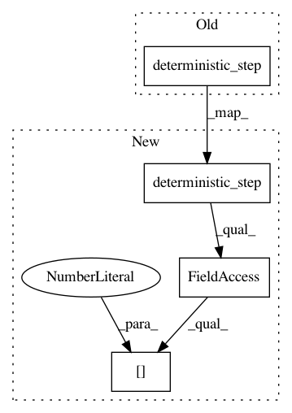

fb2d24891d5f5dc122370b54108a00221abb4b4d,test/paysage/models/test_save_read.py,,test_grbm_reload,#,67
Before Change
// check the two models are consistent
vis_state = vis_layer.sample_state()
vis_orig = grbm.deterministic_step(vis_state)
vis_reload = grbm_reload.deterministic_step(vis_state)
assert be.allclose(vis_orig, vis_reload)
After Change
vis_data = vis_layer.sample_state()
data_state = model.State.from_visible(vis_data, grbm)
vis_orig = grbm.deterministic_step(data_state).units[0]
vis_reload = grbm_reload.deterministic_step(data_state).units[0]
assert be.allclose(vis_orig, vis_reload)
In pattern: SUPERPATTERN
Frequency: 3
Non-data size: 4
Instances
Project Name: drckf/paysage
Commit Name: fb2d24891d5f5dc122370b54108a00221abb4b4d
Time: 2017-04-15
Author: jrwalsh1@gmail.com
File Name: test/paysage/models/test_save_read.py
Class Name:
Method Name: test_grbm_reload
Project Name: drckf/paysage
Commit Name: 990c540af3d7e35ca190ff237170c1374b1d8ecd
Time: 2017-04-14
Author: jrwalsh1@gmail.com
File Name: examples/example_util.py
Class Name:
Method Name: compute_fantasy_particles
Project Name: drckf/paysage
Commit Name: 990c540af3d7e35ca190ff237170c1374b1d8ecd
Time: 2017-04-14
Author: jrwalsh1@gmail.com
File Name: examples/example_util.py
Class Name:
Method Name: compute_reconstructions